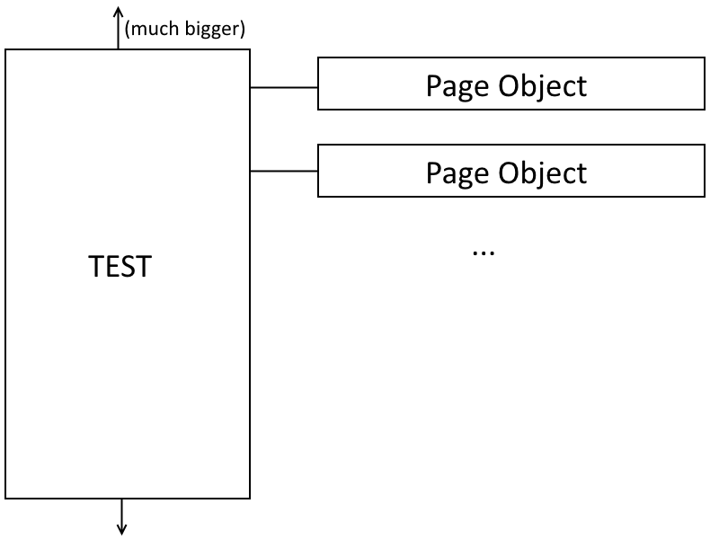
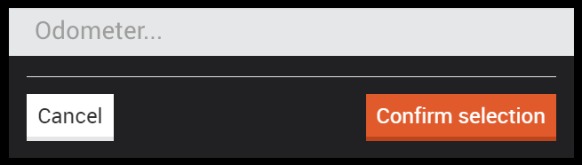
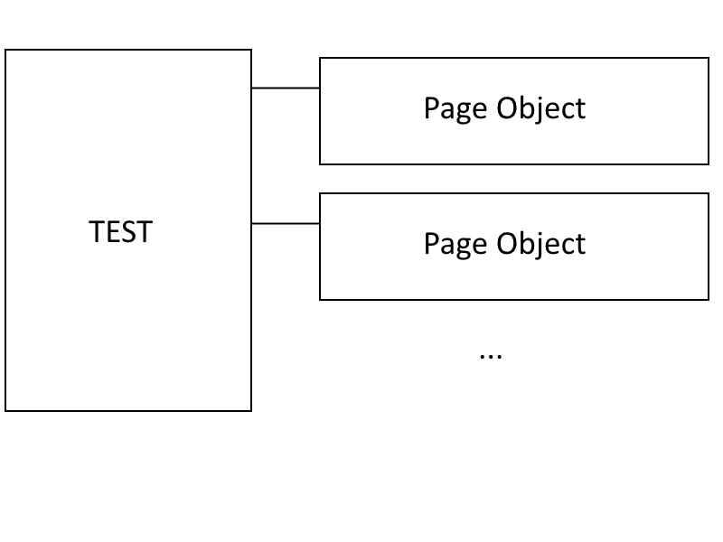
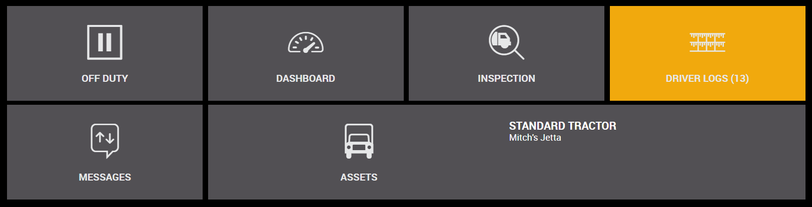
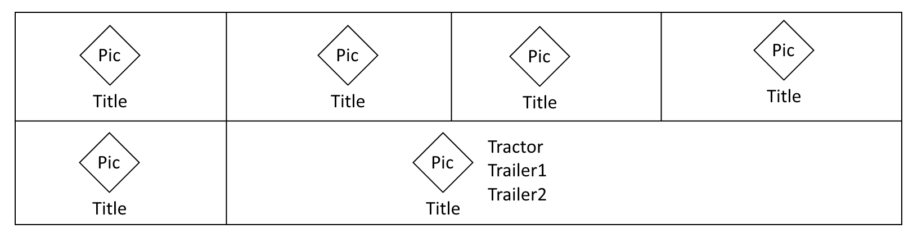
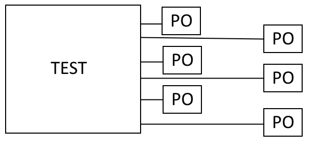
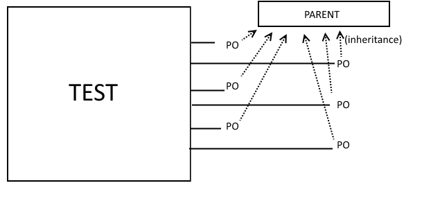
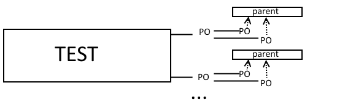
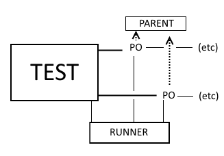

Making AutoE2E the Best
By Mitchell Hentges
(The best. #1. The best. It's the best)
Current State
- Page Objects don't abstract elements behind functions
- Tests directly interact with elements through Page Objects - there's little reuse
Example - assets.spec.js
var assetsPage = require('assets.po.js');
//...
it('should allow an odometer to be set', function() {
assetsPage.odometerTractor.sendKeys('123456');
expect(assetsPage.nextButton.isEnabled()).toBeTruthy();
});Example - assets.po.js
this.odometerTractorField = element(by.model('assetsSelected.one.odometer'));
this.odometerTrailer1Field = element(by.model('assetsSelected.two.odometer'));
this.odometerTrailer2Field = element(by.model('assetsSelected.three.odometer'));
this.tractorSelectButton = element(by.model('assetsSelected.one._key'));
this.trailer1SelectButton = element(by.model('assetsSelected.two._key'));
this.trailer2SelectButton = element(by.model('assetsSelected.three._key'));
this.get = function get() { ... };Current State
Step 1: Page Object functions!
Changing a page object:
//Before
this.odometerTractor = element(by.model('assetsSelected.one.odometer'));
this.odometerTrailer1 = element(by.model('assetsSelected.two.odometer'));
...//After
var odometerTractor = element(by.model('assetsSelected.one.odometer'));
var odometerTrailer1 = element(by.model('assetsSelected.two.odometer'));
...
this.clickTractorSelect = function clickTractorSelect() { ... };
this.setOdometerTractor = function setOdometerTractor(value) { ... };
this.clickTrailer1Select = function clickTrailer1Select() { ... };
this.setOdometerTrailer1 = function setOdometerTrailer1(value) { ... };Changing a test:
//Before
assetsPage.odometerTractor.sendKeys('12345');
assetsPage.odometerTrailer1.sendKeys('54321');
...//After
assetsPage.setOdometerTractor('12345');
assetsPage.setOdometerTrailer1('54321');Why?
If the page functionality changes:
- Page Object is changed to reflect functionality
- Specs remain the same
Example: asset odometer now set via modal
Refactoring before:
//In the test file
//old: assetsPage.tractorOdometer.sendKeys(12345);
assetsPage.odometerTractor.click();
odometerModal.odometerField.sendKeys(12345);
odometerModal.submit();The above changes are done n times where n is the number of tests
What happens when "find and replace" doesn't get all the situations? We have to manually change the tests
Refactoring after:
//In the page object file
//old:
//this.setOdometerTractor = function setOdometerTractor(value) {
// odometerTractor.sendKeys(value);
//};
this.setOdometerTractor = function setOdometerTractor(value) {
tractorOdometerButton.click();
odometerModal.setOdometer(value);
odometerField.submit();
}The above changes are done once.
Before:
After:
Step 2: Inheritance!
The VC reuses so many structures!
 Modelling tiles now
function DashboardTile() {
var tile = element(by.model('...'));
this.open = function open() { ... };
this.isPresent = function isPresent() { ... };
};
function DutyStatusTile() {
var tile = element(by.model('...'));
this.open = function open() { ... };
this.isPresent = function isPresent() { ... };
};
function MessagingTile() {
...
};Each tile has to be written six times
Modelling tiles later
function Tile() {
//this.tile is set in children
this.open = function open() { ... };
this.isPresent = function isPresent() { ... };
};
function DashboardTile() {
this.tile = element(by.model('...'));
};
function DutyStatusTile() {
this.tile = element(by.model('...'));
};
function MessagingTile() {
...
};Common tile functionality written once
Before:
After:
Step 3: Other breakdowns
For example, the AssetsPage
//before, AssetsPage.po.js
function AssetsPage() {
var odometerTractor = element(by.model('assetsSelected.one.odometer'));
var odometerTrailer1 = element(by.model('assetsSelected.two.odometer'));
var odometerTrailer2 = element(by.model('assetsSelected.three.odometer'));
var tractorSelectButton = element(by.model('assetsSelected.one._key'));
var trailer1SelectButton = element(by.model('assetsSelected.two._key'));
var trailer2SelectButton = element(by.model('assetsSelected.three._key'));
this.setOdometerTractor = function setOdometerTractor(value) { ... };
this.setOdometerTrailer1 = function setOdometerTrailer1(value) { ... };
this.setOdometerTrailer2 = function setOdometerTrailer2(value) { ... };
this.clickTractorSelect = function clickTractorSelect() { ... };
this.clickTrailer1Select = function clickTrailer1Select() { ... };
this.clickTrailer2Select = function clickTrailer2Select() { ... };
};//before, spec file
assetsPage.clickTractorSelect();
assetsPage.setOdometerTractor(12345);Could be broken down to:
//AssetsPage.po.js
function AssetsPage() {
this.tractor = require('AssetRow.po.js')(0);
this.trailer1 = require('AssetRow.po.js')(1);
this.trailer2 = require('AssetRow.po.js')(2);
};//AssetRow.po.js
function AssetRow(index) {
var row = element(by.repeater(...).row(index));
this.clickAssetSelect = function clickAssetSelect() { ... };
this.setOdometer = function setOdometer() { ... };
};//In the test file
assetsPage.tractor
.clickAssetSelect()
.setOdometer(12345);Again, imagine that odometer is now set via modal
Making changes only needs to happen in one place:
//AssetRow.po.js
function AssetRow(index) {
//replacing: this.setOdometer = function setOdometer() { ... };
this.clickOdometerSelect = function clickOdometerSelect() { ... };
};This doesn't need to happen three times
Before:
After:
Step 4: The runner!
Testing logging in as different users:
//In the test file
assetsPage.clickUserSelection();
userModal.setFilter('test_driver@arrow.ca')
.selectRow(0)
.submit();
assetsPage
.setPassword('testing')
.submit();
expect(assetsPage.isPresent()).toBeTruthy();These six statements are done every time we need to log in
Should this common functionality be put in a Page Object?
No:
- Page objects are meant for modelling/direct interaction with the page
- Knowledge of testing sequences isn't "direct interaction"
Is this common functionality put into the test?
No:
- What if multiple different tests need to to log in?
What about in a "runner" file?
- Multiple tests that need to run the same sequence can "import" this file
- Knowledge of sequence is not given to the page object (minimal knowledge principal)
//In the test file
LoginRunner
.login('test_driver@arrow.ca', 'testing');
expect(assetsPage.isPresent()).toBeTruthy();//LoginRunner.po.js
this.login = function login(username, password) { ... };Before:
Final State
Result:
- Test interacts with two things: page objects and runners
- Page objects use inheritance to minimize code duplication
- Page objects contain other, smaller page objects to maximize code reuse
- Page object functionality abstracted through functions

/